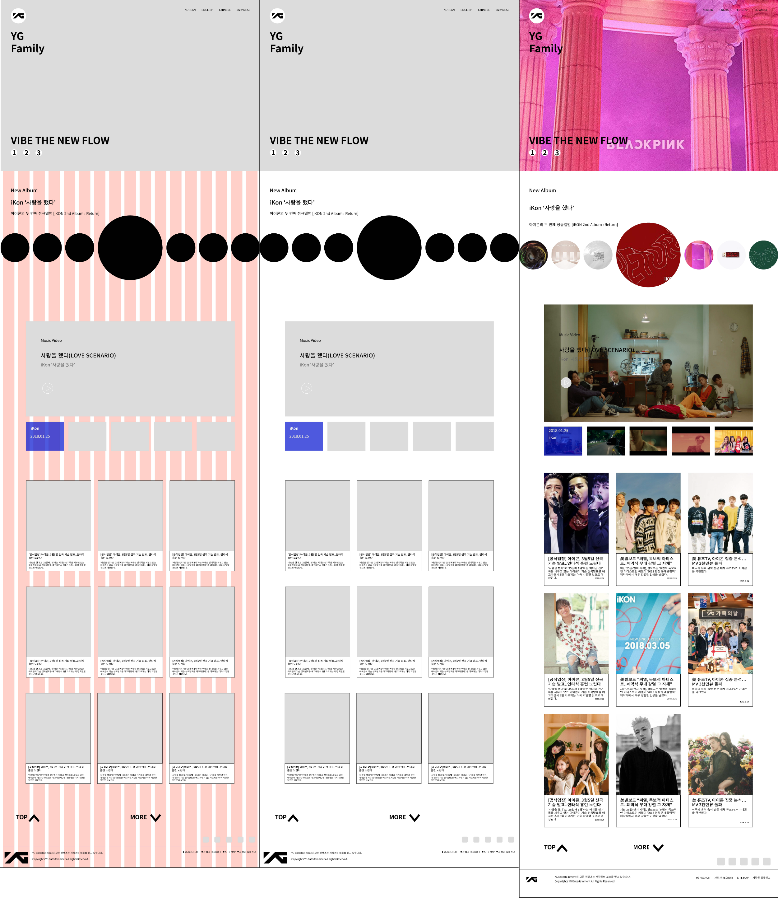
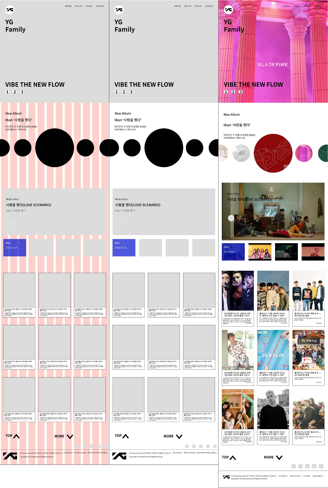
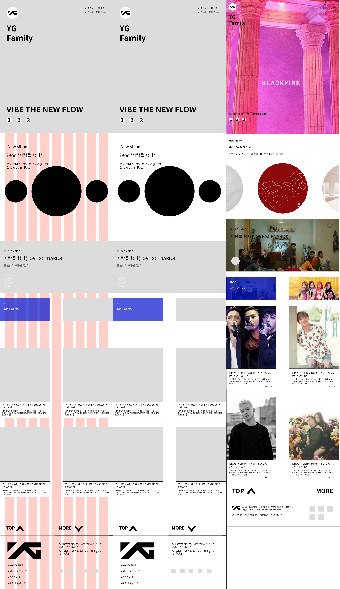

디자인
기획 스케치 이후의 단계입니다.
반응형 디바이스 사이즈와 그리드, 레이아웃을 균일화하여 선정합니다.
YG 리뉴얼 프로젝트는 1366px 이상(큰 모니터), 1365px ~ 960px(일반 모니터와 노트북), 959px ~ 481px(태블릿PC), 480px 미만(모바일) 총 4개의 반응형으로 제작하였습니다.
러프 스케치와 프로토 타입을 제작, 퍼블리싱 테스트, 프로토 타입 수정을 반복하며 완성도를 높였습니다.
  